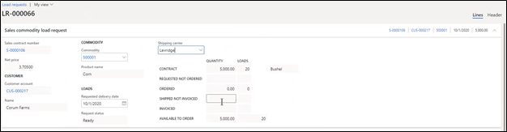
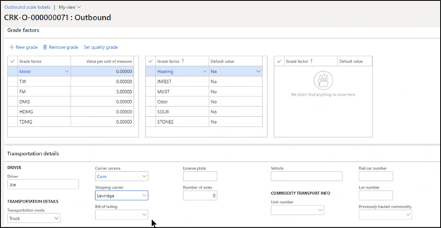
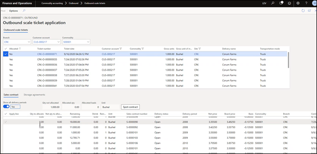
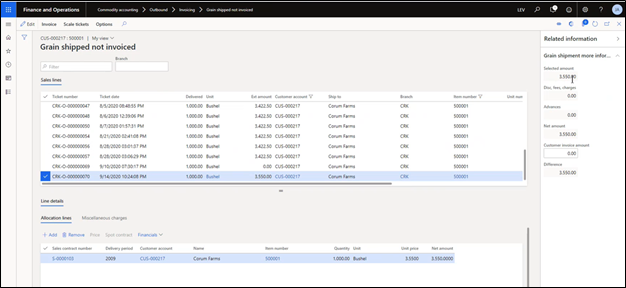
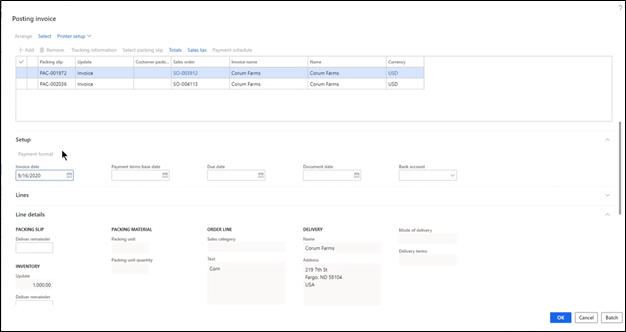
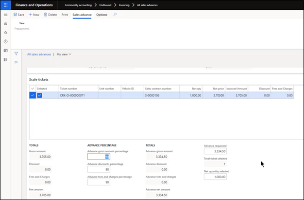
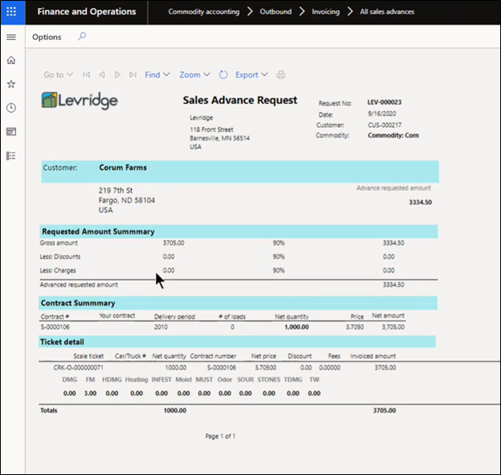

Grain - Outbound Processes
Overview
An overview of the outbound grain process beginning with contracts and working through shipments and invoicing.
Finance & Operations > Modules > Commodity Accounting
From the commodity accounting menu, the outbound process consists of:
- Sales contracts
- Sales commodity contracts for load requests
- Load requests
- Outbound scale tickets
- Outbound scale ticket application
- Open contracts
One also has the Invoicing option, which includes:
- Grain shipped not invoiced
- Outbound scale ticket destination weights and grades
- Shipped not invoiced – Bulk
- All sales advances
Sales Contracts
Creating a New Sales Contract
There are two sections of Sales Contracts: - Line Detail - Header
The following items are viewable in the Line Detail section.
To enter a new sales contract (grain that is being shipped to another individual or company), click on Sales contracts. The new window will show a listing of all the sales contracts that currently exist. Click New located on the tab bar. The Create sales contract window will appear on the right-hand side and will default in the Branch one is located at. The Branch location can be changed. Additional items to be entered include:
- Contract Type: user defined
- Customer account: Automatically defaulted; can be changed
- Commodity: user defined
- Contract quantity: Amount of commodity available for the contract
- Load based: This is a toggle field set to yes / no.
- If set to no, the Number of loads will default to the Contract quantity.
- If set to yes: the contract is only satisfied by the number of loads. One would indicate the number of loads requested, which the system would calculate the load size. The Contract quantity is not significant to satisfy the contract. The Load size is user-defined with the Number of loads being reflective of the Load size.
- Discount schedule: you can choose discount schedule you would like in order to calculate the discounts that will be charged to you based off grain you deliver.
- Delivery Terms: user-defined. Majority of commodities are shipped on a Delivered basis.
- Grades to govern: user-defined. Defaults to Destination
- Weights to govern: user-defined. Defaults to Destination
- Delivery Period: Choose specific month and year
- Ticker: Pricing purposes
- Board Price: Becomes grayed out (un-usable) if Basis contract is used.
- Net Price: Becomes grayed out (un-usable) if Basis contract is used.
- Basis: Enter basis price if Basis contract is used. If Cash contract is used, it opens up board price and basis. Would need to enter both of those and the system will calculate Net price.
Click Create
After the contract is created, the Sales contract is available to view in the Sales contract header. The Delivery Period section shows the commodity scheduled for that delivery period. There can be multiple delivery periods along with the option to enter additional delivery periods and remove delivery periods.
Setting the Price on a Basis Contract
Basis contracts are required to have a price set. This is done by clicking on “Set price” under Delivery Periods. The system will open a Contract pricing slider where the user can enter a Price quantity for the contract. The user can price out the whole quantity or a portion of the quantity. The Net price will be generated with the entering of the Price quantity, along with the Board price and previously entered Basis.
Click Create
A new delivery period line is created with the set price contract.
Alternate Delivery Pricing
A function available with Sales Contract is the alternate delivery pricing. This functionality allows one to choose a different shipping address and a different price in (adjustment for shipping). Depending on when the ticket is entered and the chosen shipping address, the system will know what price to pull from.
Contract Entry
The Header section includes the following fields:
- Sales contract header
- Miscellaneous details
- The ability to identify the trader, broker, and broker commission rates. The system does not create a payable based off commission rate. This would need to be paid separately.
- Reference Numbers
- An alphanumeric field available as a cross reference to ensure the Sales Contract matches with the broker and/or trader’s purchase contract number.
- Notes
- An option for notes to be included and printed on the contract.
- Contract dates and quantities
- The ability to keep track if the contract has been signed and returned.
- Can include Contract date, Sent date, and Date returned. This allows the ability to generate a report out of the system and preview what contracts have been sent and returned.
- Discounts, fees, and freight
- The Discount schedule previously chosen by generating a new Sales Contract will show in this field. If there are additional discount schedules, one can include on Fee schedule field. Terms of payment will default from customer.
- Delivery terms
- Market to market adjustment
- Market adjustments made through individual site or central site locations.
- If brought to a central site, the freight adjustment could be received from the issuing location back to the pricing location and brough together for one market price. Gains or losses would be calculated based off this market to market adjustment.
- Freight included in basis
- The ability to determine freight costs from the basis. Some merchandisers prefer to see freight separately. This is an option to set freight costs in the system with the commodity dollar amount posting to a freight expense account instead of being part of the margin.
- Freight per unit
- The ability to record what the freight rate was. This is for informational purposes and with the ability to print on the contract if preferred.
- Freight invoiceable
- A toggle switch with the ability to create an invoice based of freight weight (if toggled to yes).
- Addresses
- When a ticket is entered and applied to a contract, the addresses need to match.
- Ship from address: current location
- Ship to name:
- FOB address: destination contract.
- Hedge commodity
- For hedging purposes. The ability to identify if there was a commodity either being bought or sold that was not traded on an exchange.
Within the contract entry, additional functionality includes:
- View:
- Scale tickets and load requests issued against a contract, along with load orders tied to a contract.
- Generate:
- Pricing confirmation. This can be printed.
- Fill:
- Ability to fill at market price or contract price.
- Market price:
- Takes quantity against current market. The system calculates gain/loss to create either a payable or receivable
- Contract price:
- Takes quantity against current contract price. There is no gain or losses.
- Can cancel or underfill the contract at any time.
Sales Commodity Contracts for Load Requests
Load request contracts can be viewed under Commodity Accounting > Outbound menu tab.
A load request is a shipping order that states the specific ship date/time for a specific sales contract.
- Load orders: The individual shipments to be done
- Load requests: Shipments to be made
Once loads have been shipped, the order quantity will show up based off load request, shipped quantity, ticket number and where it was shipped to. Those are used to request shipments.
To create a new load request:
- Click New
- Choose specific contract number
- Choose delivery period
- Create request
The newly created load requests automatically inputs the contract information (commodity, customer, customer account, contract number, and requested delivery date). The user will need to input the shipper in the Shipping carrier field.

To create a new load order:
- Click Add Load The system will assign a number along with the shipping carrier that was previously selected.
- Input the Requested ship date
- Input Ordered Qty
- Choose Ship to address
- The ship to address needs to match what is on the contract.
- Click Save. This sets up a single load. You can remove a load or create multiple loads at one time with the Generate Load function. It depends on the user how many loads they would like to create. The load dates can be changed
Outbound Scale Ticket Entry
Commodity accounting > Outbound > Outbound scale tickets
By clicking on the Outbound scale tickets window, all of the outbound scale tickets within the system are viewable.
To create a new scale ticket:
- Click on New
- The Create scale ticket window will appear on the righthand side
- Ticket type: Outbound
- Commodity: enter commodity
- Branch: autogenerated
- Warehouse: autogenerated
- Customer account: choose customer
- Ticket date: autogenerated
- Delivery name: Autogenerated
- Address: will auto-populate with specific customer selected above.
- Click Create
The new scale ticket will now appear in your main window.
The user will be able to choose the specific load number previously set up to reflect on the shipped ticket. You do not have to use a load number. After entering in the outlined fields, click Save.
- Scale ticket split details: will rarely if ever use splits on a scale ticket
- Origin weights: most of the customers will use scale interface. Most of this information will be imported in the scale system.
- Designation weights: designation weights and grades are based off contract. The user can enter the contract’s gross weight, tare weight and net weight, which will be reflected on the ticket record and with the ability to invoice based off that information.
- Grade Factors: can enter in any grade information.
- Transportation details: information to track truck and driver. This will feed into the TMS system for freight payment and tracking. Requirements state you must state what the previously hauled commodity is. This is a field identified on the Transportation details section.
- Direct Ship: This is a yes/no toggle switch. If flipped to yes, the Partner ticket number and Direct ship ticket number would become active and flagged. Direct ship indicates the grower is going to ship specific commodities stored onsite (ex: farm) to the receiving farm. It is a function to record commodities shipped from the users own inventory. This would set up the inbound scale ticket as well as a direct ship function so it doesn’t update inventory.

The ticket is now ready to be applied to a contract. Click Apply. The Outbound scale ticket application is now viewable and shows all of the outbound scale tickets, along with the sales contracts and storage agreements specific to the customer.

- Show all delivery periods. This is a yes/no toggle switch where you can view contracts. The default is to only show the current delivery period unless you wish to apply it to older contracts. But to apply against an upcoming period, you would need to turn toggle switch on.
- Spot Contract: if there is no contract available for this ticket or portion of it, the user can create a spot contract. The situation would be the purchaser would call the elevator and mention there was an over shipment. The elevator can at that point spot it out. If spotted out, the user would click the Spot Contract button where a new window will appear to create a spot contract.
Once the selected contract shows the quantity to be allocated, the next steps include choosing the contract to apply it to.
- Click Post
The contract will be updated in system and applied where it needs to be processed.
Invoicing
Commodity Accounting Menu > Invoice > Grain shipped not invoiced
Outbound scale ticket destination weights and grades
Outbound scale ticket destination weights and grades is a menu option where one can enter the destination weights, gross quantity per pound, and destination moisture, test weight, and additional grades for a specific contract. These results are inputted to calculate final payment.
Grain shipped not invoiced
A menu option showing all the loads shipped and yet to receive payment. These are separated by customer and by commodity.

The user can select the number of loads they would like to create an invoice. The invoice process is referred to as a matching process. Majority of the shipments are made for commodity purposes, which means they do not need to send out invoices to request a payment. These invoices are after the fact and are known as a matching process. The goal is to match the payment sent when loads were sent. Under the Customer invoice amount field, they may not pay exact net amount due to weight or grade differences. Because the user will want the customer invoice and net amount to match, there is a future user option to adjust amount to match. For any dollar amounts differed on the commodity load, there will be functionality capturing the difference.
- Click Invoice
There are two Invoice options:
- Pro forma invoice: this is in the rare situation where the user needs to send the invoice to the customer. This creates a document that looks like an invoice but doesn’t update in the system as an invoice. It creates a document and then goes away.
-
Invoice: this is the process of creating an invoice. The system generates the processes necessary to get the information back in F&O and creates a receivable on the customer account. After processing, a new Posting invoice window will appear with the invoice information:
- Parameters: printing specifications
- Overview: tickets being invoiced
- Setup: any payment format adjustments
- Line details: packing and delivery information

Shipped not invoiced-Bulk
A menu option which includes slight variations to be used with items that are not considered commodities (ex: ethanol).
All Sales advances
A menu option used on rail shipments for commodities. When railcars are loaded, it could take a couple of weeks to get to their destination. As soon as the railcars are loaded and released for shipment, the user can draft up to 90% of the commodity value for immediate payment. Once the shipments are recorded in system, a new invoice can be created. A Sales advance create window will pop up on right hand side.
- Sales advance description
- Customer account
- Commodity
- Currency
- Contract number: select contract you are going to advance it against.
- Unit number: unit number of the rail car
- Note: will appear on the printed documented
If the shipment is selected to invoice, the system processes the shipment and calculates the profit. The system automatically inputs 90% for the advance percentage. If there were discounts or any other fees or charges, it would also calculate at 90%.

- Click Save. This locks it in system and the user can print a document showing the advance and the calculation took place. The Sales advance is created as a receivable.

This is all the transactional outbound shipments for sales purposes.
The Grain Inbound Processes can be found under Grain Inbound Processes